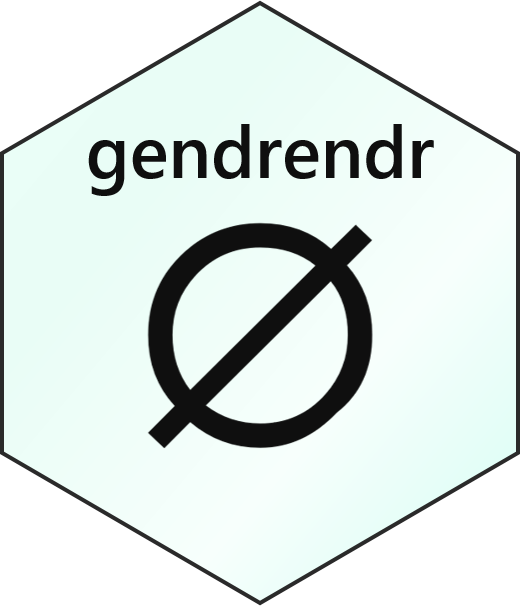

gendrendr contains a simple set of functions designed to highlight the inaccuracy and violence of assigning genders to others.
The premise is as follows:
- the assignment of gender to another in the absence of personal confirmation is an act of violence that perpetuates hierarchical systems f oppression and can be personally traumatizing;
- the assumption of the correctness of gender assigned at birth reinforces archaic medical views and state-sanctioned violence;
- gender is a construct that varies over space, time, culture, and ethnicity, and assuming that data from one context apply to another reinforces gendered imperialist violence and perpetuates cultural stereotypes;
- of specific relevance is the fact that gender is not a binary, and use of data that assume a gender binary reinforces that norm, which does violence to individuals who are non-binary and erases culutres that embrace a diversity of genders;
- gender cannot be accurately inferred from names, presentations, pronouns or other such factors, and assuming it can and that the consequences of any failure are trivial speaks to the devaluation of transgender, non-binary, and gender-non-conforming life…and this is not absolved by using large data sets and fancy statistics; and
- if it is important for some reason to know what someone’s gender is, the only way to accurately, respectfully, and definitively obtain that information is from that person.
Status: Experimental, Active Development
The gendrendr package is currently being actively developed, and is an early stage of package construction.